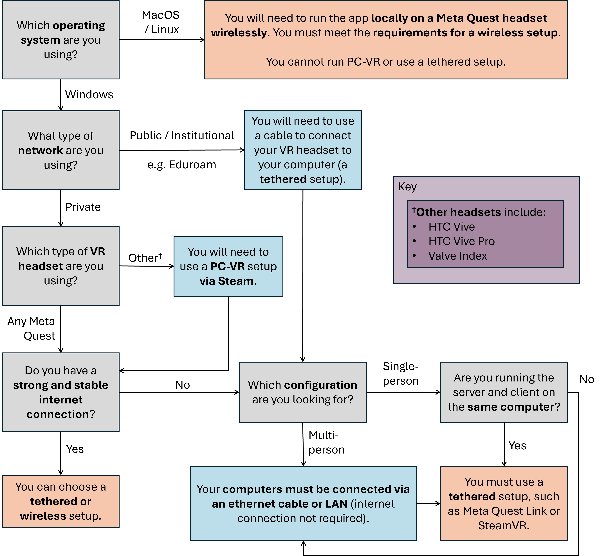

NanoVer iMD
You can use the NanoVer iMD application to incorporate VR into your workflow, including:
visualising molecular systems in VR, including real-time MD simulations, recorded trajectories, and static structures
interacting with real-time molecular simulations using VR controllers
joining together with others for multi-person sessions in VR
To install the NanoVer iMD application, please go to Installation & Getting Started. For help choosing your VR setup, please see Choosing your setup for iMD-VR below.
Using NanoVer iMD
We call an instance of the NanoVer iMD application an iMD-VR client, or simply a VR client. This is different to a python client, which connects to a NanoVer server from a python script or Jupyter notebook. This distinction is important since the two types of client offer different functionalities. For example, both can connect to a NanoVer server to access simulation data, run commands such as play/pause/reset, & apply forces to the molecule system (interactive MD). However, only a VR client allows you to visualise & interact with a simulation in VR, and only a python client allows you to change the visualisation of the molecular system.
Key point
A VR Client or iMD-VR client is an instance of the NanoVer iMD application that has connected to a NanoVer server.
User Interface
There are two types of user interface (UI) in the NanoVer iMD application:

Screenshot of the NanoVer iMD application showing the on-screen (top left) and in-VR (center) menus.
Choosing your setup for iMD-VR
If you wish to visualise and/or interact with your simulations in VR, you will need to use an iMD-VR client. We focus on NanoVer iMD as the prototypical iMD-VR client, but these instructions can be generalised to any iMD-VR client, e.g. your own custom VR application that uses the NanoverUnityPlugin.
Please feel free to use the instructions below to help you choose your VR setup, then search online (or follow the links given below) for the documentation of your chosen method for the latest instructions on configuring your setup. Once you’re ready, head to Installation & Getting Started to get started with NanoVer iMD.
Note
VR is developing fast and there are constantly new features/apps/ways of doing things. Therefore, these instructions may not be an exhaustive list of all the possible VR setups. Please feel free to choose whichever one you are most comfortable with! We also recommend checking out the online documentation for your VR headset if you run into any problems relating to setting up your VR kit.
Flow diagram for choosing your VR setup
Below is a flow diagram to help you decide which setup to choose based on: the operating system of your computer, the type of network you have access to, your VR headset, and your desired configuration (single-/multi-person VR).
{kind=link}
Key point
For a wireless setup you will need to have a strong and stable internet connection that allows communication over the network. This option is often incompatible with public / institutional networks.
Key definition
Tethered: using a cable to connect your VR headset to your computer.
Please use the following dropdown boxes to see more details about the different VR setups:
Using PC-VR
This option is compatible with the following VR setups:
Meta Quest Link (tethered)
Meta Quest AirLink (wireless)
SteamVR (tethered)
Steam Link (wireless)
You can use either NanoVer-iMD installation method:
Downloading the latest release of the NanoVer iMD executable, see Download the latest release.
Conda installation of the NanoVer iMD package, see Conda installation.
Running locally on a Meta Quest headset
This option is compatible with the following VR setups:
Run directly on the App store of a Meta Quest headset (wireless)
Meta Quest Link with Meta Quest Developer Hub (tethered)
You must use the following NanoVer-iMD installation method:
Download the latest release of the NanoVer iMD apk and sideload this onto your headset, see Download the latest release. If you wish to use your VR headset wirelessly, then you must meet the requirements for a wireless setup (see above).
Choosing this option means that you cannot run NanoVer iMD via conda.